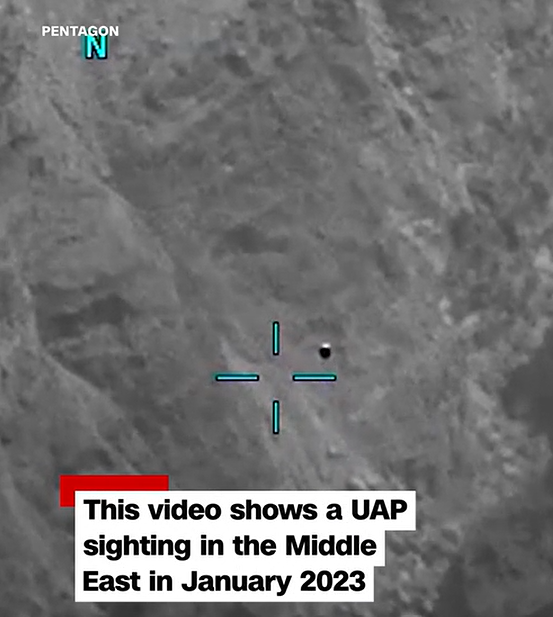

CIENCIA · DOCUMENTOS OFICIALES
Archivos OVNI: una nueva entrega de documentos abre preguntas
Estados Unidos difundió una quinta tanda de expedientes sobre fenómenos anómalos no identificados. Los documentos son una fuente histórica, pero no equivalen por sí solos a pruebas de origen extraterrestre.

¿Qué se publicó?
El 7 de agosto de 2026, las autoridades estadounidenses difundieron la quinta entrega de archivos sobre UAP, conocidos popularmente como OVNI. Según la información publicada por Live 5 News, el lote contiene memorandos escaneados de la década de 1950, notas de la CIA de los años sesenta e interpretaciones artísticas de algunos informes.
Entre los materiales mencionados aparecen representaciones de un supuesto incidente en Afganistán en 2002 y de otro suceso descrito por un antiguo empleado del departamento de defensa estadounidense en 2023. Un dibujo sirve para ilustrar un testimonio, pero no permite verificar por sí mismo lo que ocurrió.
Transparencia y lectura crítica
La publicación forma parte de una iniciativa de divulgación gradual que comenzó en mayo de 2026. Los archivos permiten que periodistas, investigadores y ciudadanos conozcan mejor qué información conservan las instituciones.
En mi opinión, lo más interesante no es afirmar que se haya descubierto vida extraterrestre, sino comprender la diferencia entre un documento oficial, una declaración de un testigo y una conclusión científica respaldada por evidencias.
Tres preguntas para interpretar un expediente
- ¿Quién elaboró el documento y en qué fecha?
- ¿Describe un hecho observado o una interpretación posterior?
- ¿Hay pruebas independientes que permitan comprobar el relato?
Fuente original
Resumen redactado a partir de la noticia de Brandy Beard publicada por Live 5 News el 7 de agosto de 2026.